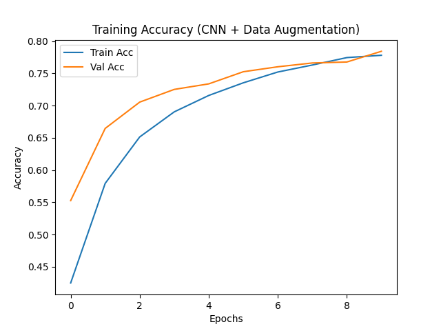
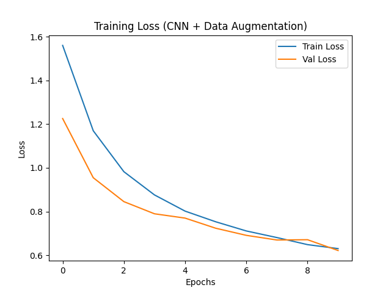
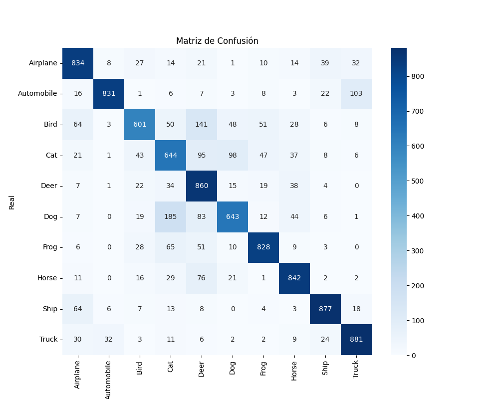
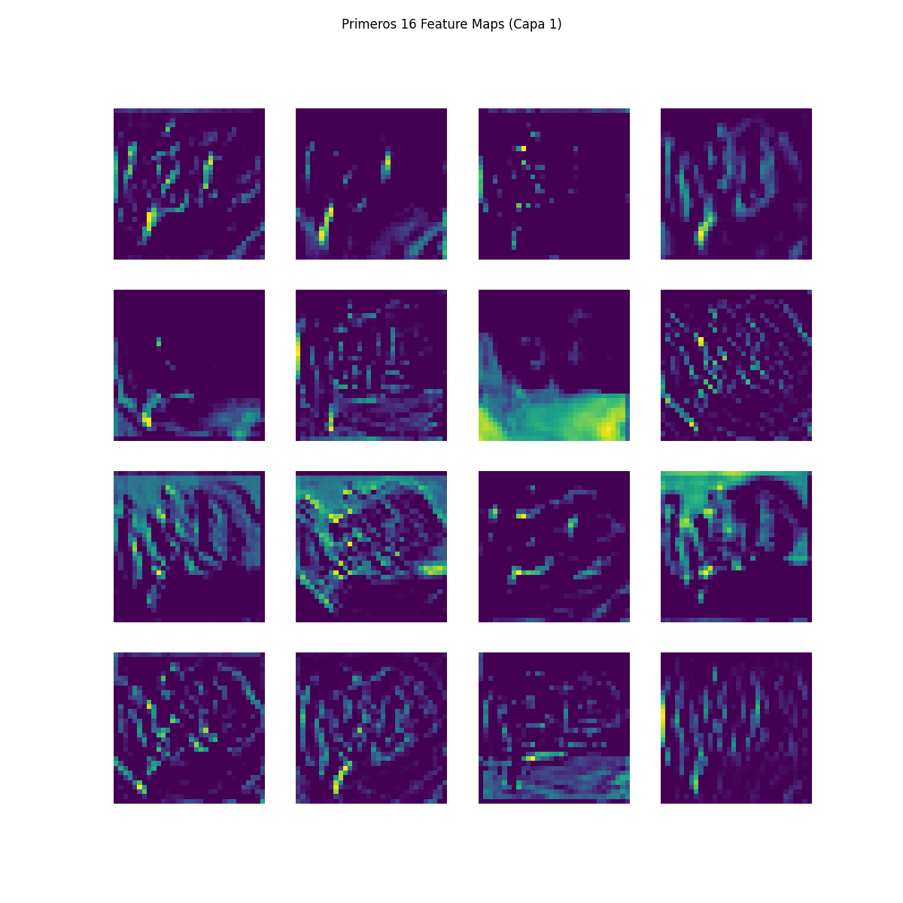
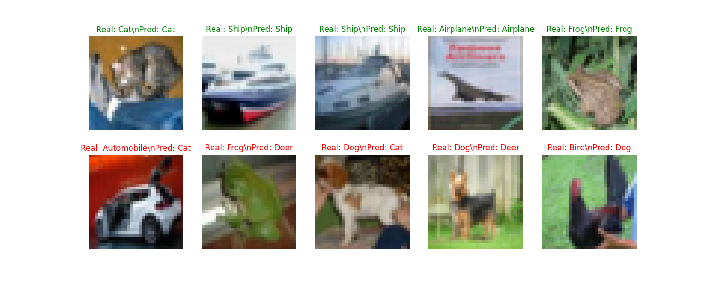

Reporte Oficial de Experimentación y Resultados
| Modelo | Train Accuracy | Test Accuracy | Precision | Recall | F1 Score |
|---|---|---|---|---|---|
| CNN básica | 91.85% | 74.15% | 0.7472 | 0.7415 | 0.7413 |
| CNN profunda | 91.92% | 77.38% | 0.7773 | 0.7738 | 0.7742 |
| CNN + Dropout | 84.03% | 76.44% | 0.7669 | 0.7644 | 0.7648 |
| 🚀 CNN + Data Augmentation | 77.79% | 78.41% | 0.7914 | 0.7841 | 0.7838 |



Visualización de los filtros aprendidos en la primera capa convolucional.

